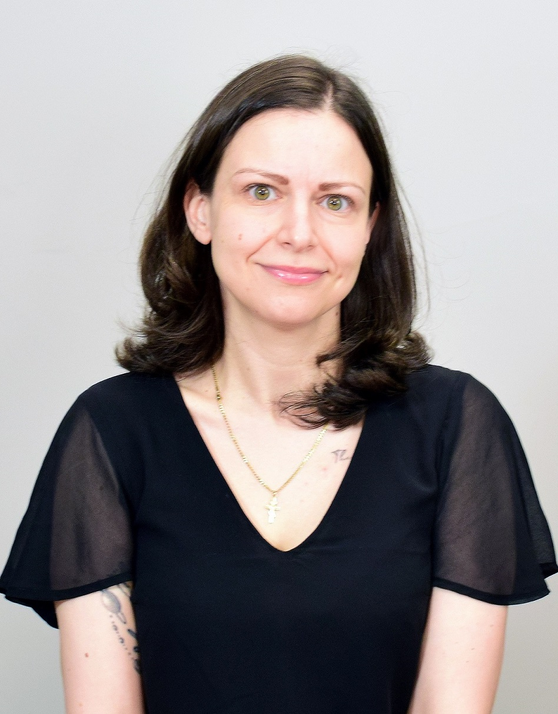

Researcher in Computational Linguistics/Natural Language Processing. Passionate foreign language learner and teacher.

I am currently pursuing a PhD in Computational Linguistics in Sorbonne University, Paris. My thesis is entitled "Production of Abridged Versions of Literary Texts: A Multilingual Approach".
In parallel, I am working full-time as a developer/academic researcher in LORIA/the University of Lorraine. My main line of research involves the application of NLP methods within the field of stemmatology, in particular in relation to Hebrew manuscripts.
I have Master's degrees in Literature (University of Essex, UK) and Computing (Staffordshire University, UK), both completed with distinction. I have also completed a 2-year period of specialisation in NLP in Kyoto University, Japan, under the MEXT scholarship.
In 2025, I received the "Culture and Creativity" award at the Study UK Alumni Awards, France.
I enjoy travelling and learning foreign languages. I speak Bulgarian (native), English (C2/near-native), French (C2), Spanish (B2), Italian (B2), Russian (B1), Japanese (B1), Greek (B1), Hebrew (around B1) and Old Church Slavonic (around B1). I am a member of HYPIA, the International Association of Hyperpolyglots (read my interview here). I own a YouTube channel called Monoglossia, which focuses on linguistic content.